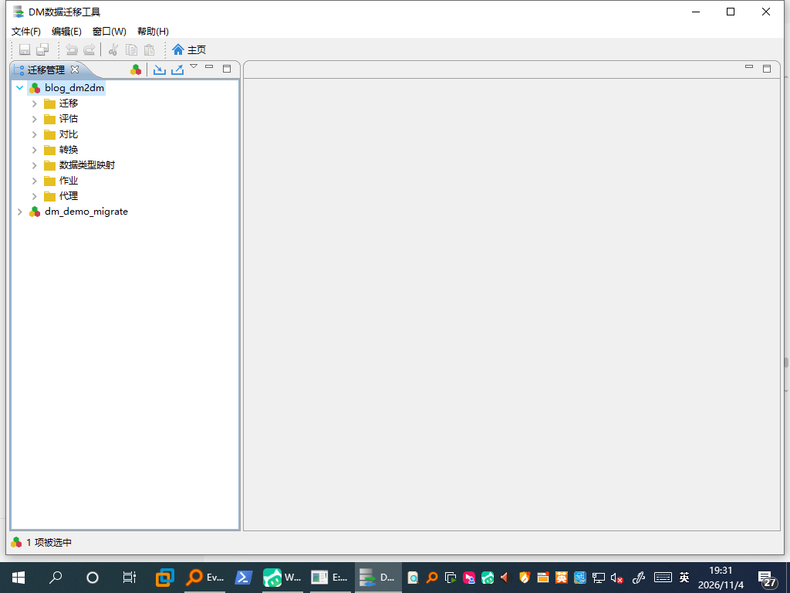
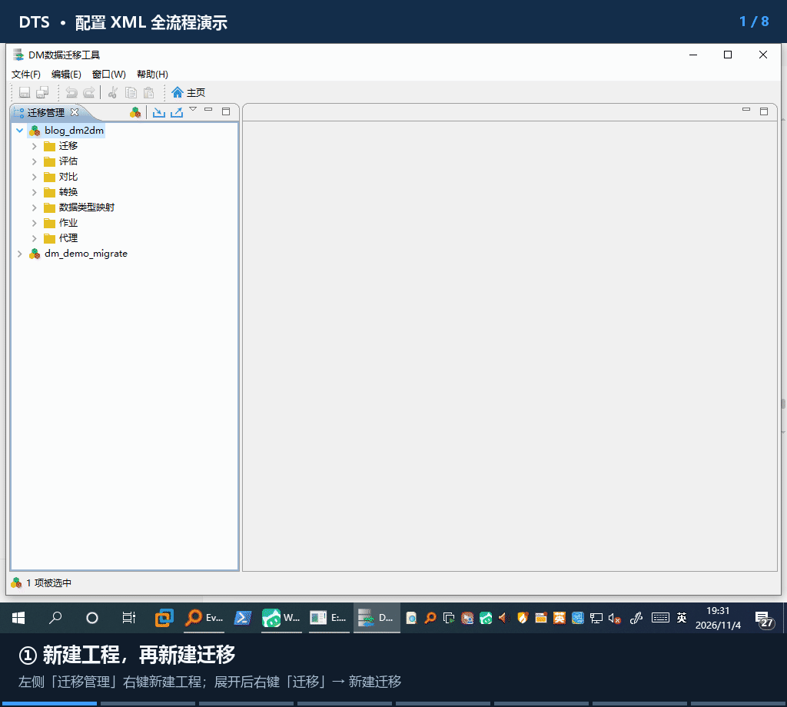
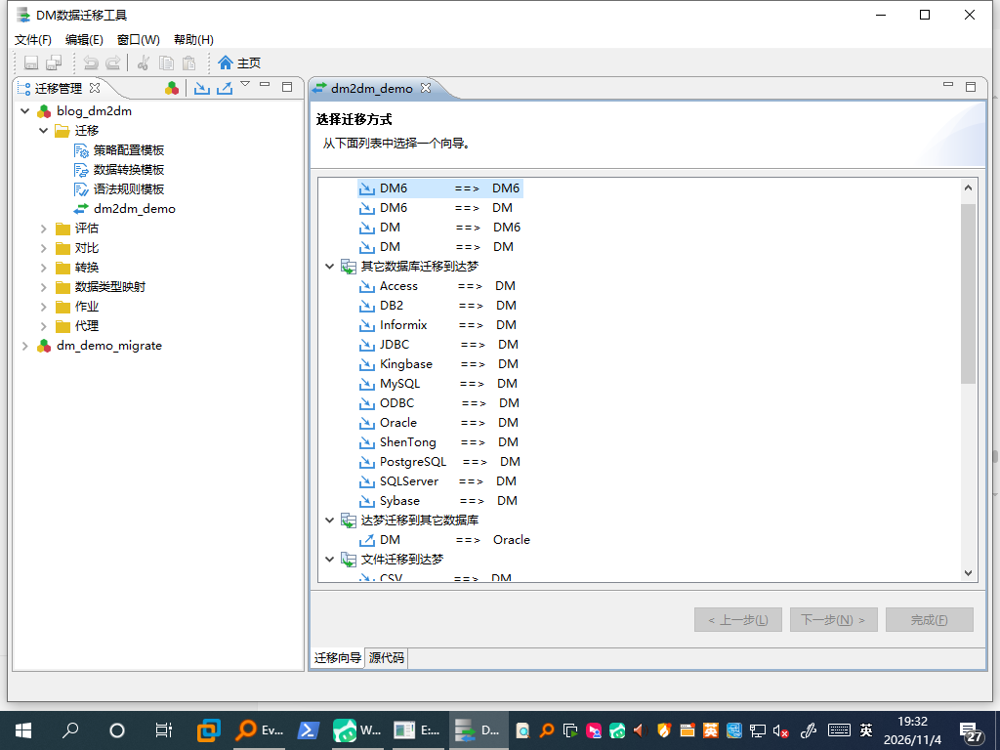
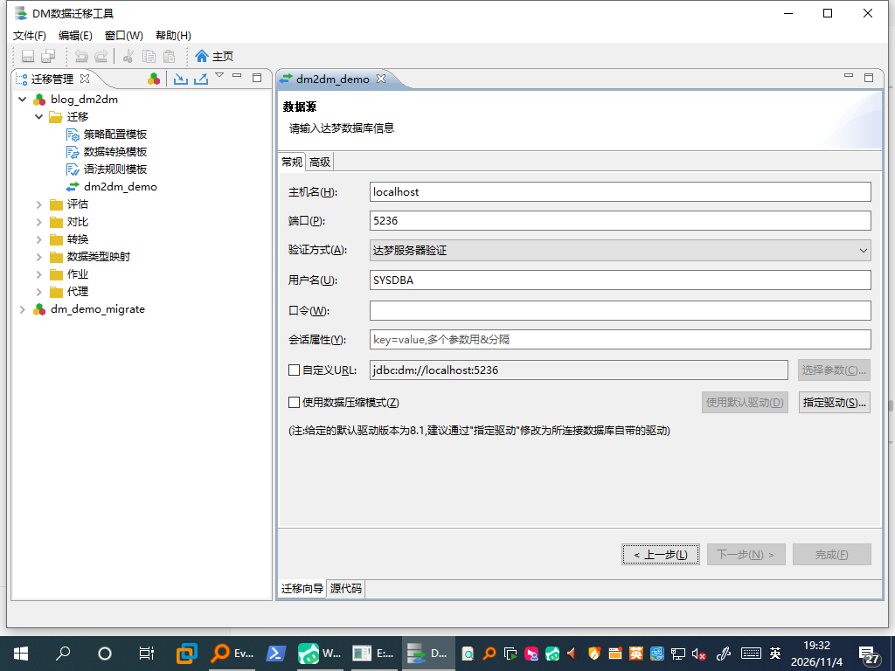
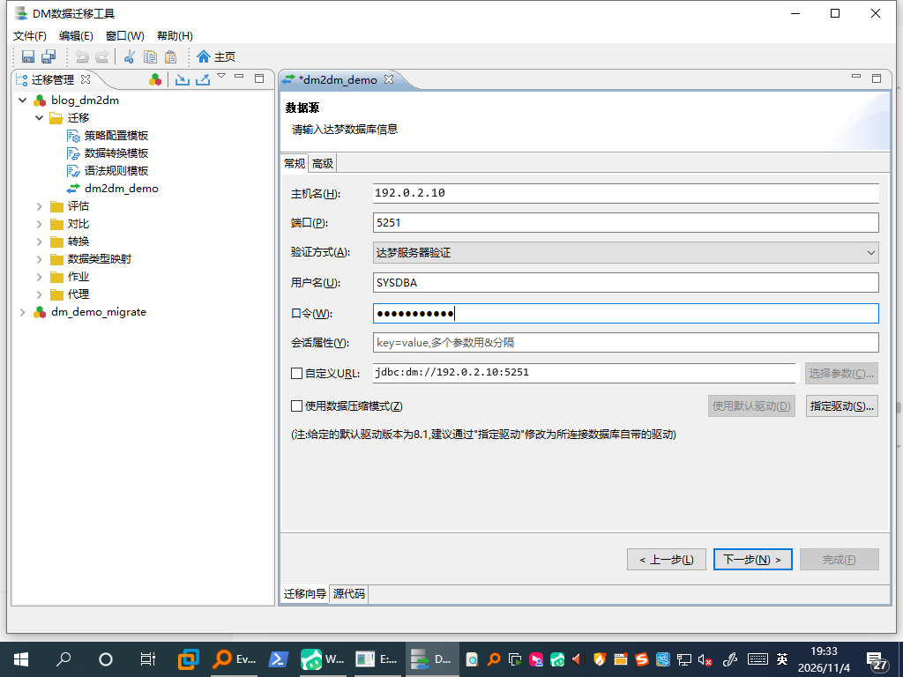
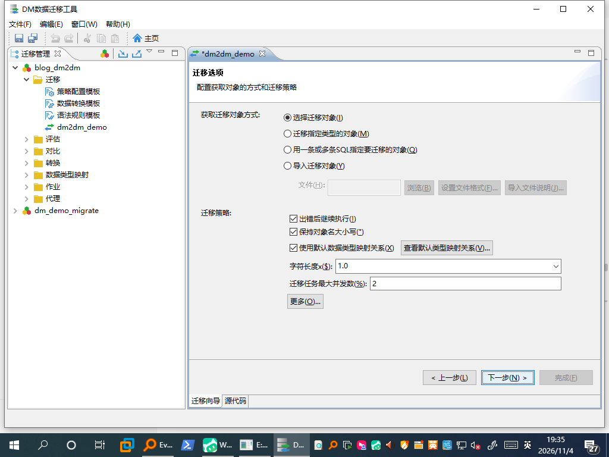
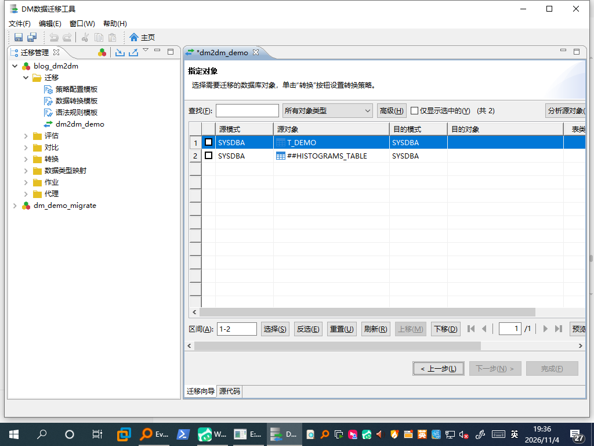
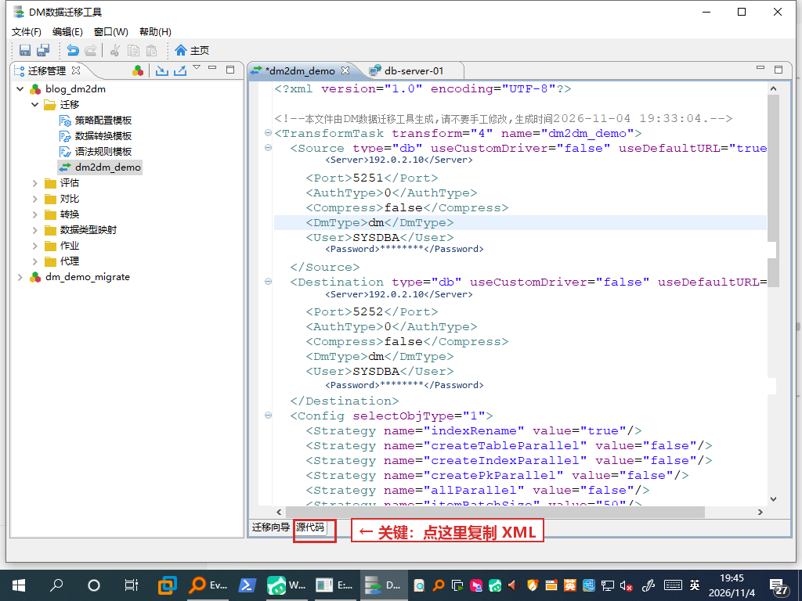
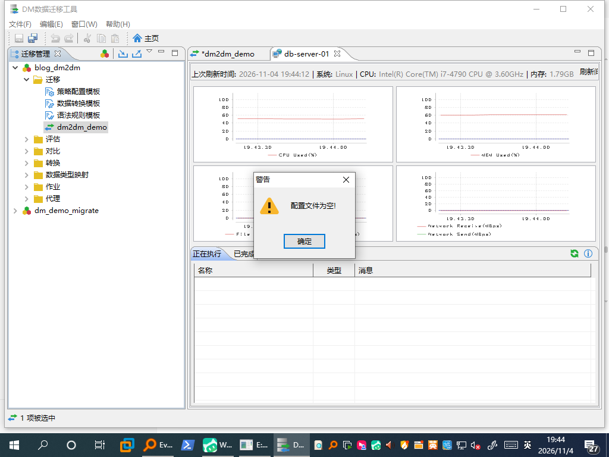
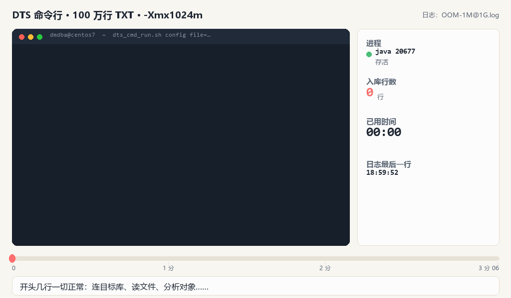

先说定位：这套办法一般用于一次性同步——割接前搬历史数据、给测试库拉一份快照、临时补一批数据。不是常驻定时任务，也不用配 cron；真要周期跑，文末给了一句可选做法。
配一次，把 XML 丢给服务器跑，配完就能关机。
- 割接前搬历史数据、给测试库拉快照
- 事后要交日志和报告
- 以后还想照这份配置再跑一次
界面照旧点点点，活儿在服务器干，数据不经过你的电脑。
- 不想碰命令行，会点鼠标就行
- 想看着进度跑，随时能停能调
- 第一次搬不熟的库，怕出错
先说清楚：慢在哪、卡在哪
很多人做达梦数据迁移，是在自己电脑上打开 DTS 图形工具，隔着 VPN 连生产库。于是数据得绕这么一大圈：
两个麻烦：① 服务器常常根本没装图形界面，DTS 打不开；② 数据来回穿 VPN，搬一次几百万行能耗掉半天，还一直占着你的电脑。
其实 DTS 自带一个很朴素的解法：图形向导只用来生成配置文件，真正干活的是服务器上的命令行。
数据全程在服务器内网流动，客户端只在配置那几分钟在线；命令敲下去之后关电脑都不影响
第一步：在图形界面里"画"出任务
下面是整段流程的 7 步，画面全部来自真机截图，非示意绘制。它会自动往前走——想停就按「暂停」，想回头按「上一步」，点下面的小格能直接跳到某一步。第 ⑦ 步是整件事的关键：复制「源代码」页的 XML，而不是点「完成」。

① 新建工程，再新建迁移
左侧「迁移管理」右键新建工程；展开后右键「迁移」→ 新建迁移
想存一份发给同事？同一套 7 步的动图在这（可右键另存 / 单独打开）

循环播放，不能暂停；也可以单独打开 GIF（2.5 MB）再右键另存
工程底下有"迁移 / 评估 / 对比 / 转换 / 作业 / 代理"等分类
DM ==> DM。Oracle、MySQL、SQL Server 到 DM 也在同一页。

向导第一步：从列表里选源端与目标端的组合

默认 localhost / 5236，按实际改

填完点"下一步"，目标库页是同样四个框（示例地址已脱敏）


这里只勾了业务表 T_DEMO
sync_job.xml。

红框就是「源代码」页签——它在窗口最底下那一行，不看这一眼很容易漏掉（截图已脱敏为示例值）
拿到 XML 有两条路。本文走 A；你平时习惯 B 就走 B——后面步骤完全一样，不用从头再学一遍。
A · 「源代码」页全选复制本文用这条
窗口最底部那个页签，Ctrl+A 全选、Ctrl+C 复制。
- 不需要先保存任务，配置填完就能拿
- 老版本也有这个页签，跨版本最稳
B · 右键任务 → 导出配置文件
工程树里右键已保存的任务，选「导出配置文件」，直接落成一个文件。
- 更省事：不用全选，不怕漏选
- 前提是任务已经保存过，否则弹「配置文件为空!」
两条路导出的都是同一份任务定义（连接信息 + 表映射 + Strategy 策略 + 加密口令串），换的是"怎么拿"，不是"拿到什么"
Strategy 策略，手工拼极易漏字段，让向导生成才省心。B 这条路的验证边界也说清楚：本轮只验到「任务没保存时报错」这一步（下图），任务保存后导出成功的情形没有实跑——当时没保存任务就把 GUI 关了。所以正文按 A 写；你用 B 拿到文件，只要服务器能跑通、报告正常，就一样可用。

走 B 而任务还没保存时，点「导出配置文件」就是这个提示。顺带看图里的工程树：「迁移」下面的 dm2dm_demo 就是任务节点，右键的是它，不是「迁移」这层目录
第二步：把 XML 放到服务器上跑
复制出来的文本在 Windows 上是 \r\r\n 行尾，上传前先转成 LF（本轮踩过：只去一层 \r\n 会剩一层 \r）。用 dos2unix，或者传的时候直接按二进制转成 \n。
# 1. 建目录、给 dmdba 权限
mkdir -p /data/dts_jobs/{report,log}
chown -R dmdba:dinstall /data/dts_jobs
# 2. 上传 sync_job.xml 到 /data/dts_jobs/（保持 LF）
# 3. 以 dmdba 身份跑这一次，验证连通与结果
su - dmdba -c "cd /home/dmdba/dmdbms/tool && \
./dts_cmd_run.sh config \
file=/data/dts_jobs/sync_job.xml \
report=/data/dts_jobs/report \
log=/data/dts_jobs/log \
err_log=/data/dts_jobs/log"跑完别只看退出码。DTS 的退出码会骗人（配置不存在也可能是 0），真正的成功要同时满足三条：
| 判据 | 长什么样 |
|---|---|
| 有完成标志 | Execute finished.（不是 网上流传的 "run finish!"） |
| 状态行计数对得上 | Status: total task:5, completed:5, error:0, ... |
| 业务数据对得上 | 目标库 select count(*) 与源库一致 |
RC=0、总耗时 67 秒、任务本体 22.4 秒、total task:5, completed:5, error:0，目标库查到 1000 行，报告 xlsx 正常生成。剩下的 45 秒是 JVM 启动 + 插件加载 + 报告导出的固定开销——每次调用都有，跟数据量无关。第三步：收尾——留痕、重跑、防挂死
一次性同步最怕的是"跑完说不清跑没跑对"。做完这三件小事再收工：
- 留档：把
sync_job.xml、当次日志、报告 xlsx 放在同一目录，按日期建子目录。以后复盘或复跑，靠这三样就够。 - 重跑先想清楚：DTS 默认追加写入。同一个 XML 再跑一遍，目标表可能多出一份重复数据；重跑前先清空目标表，或在向导里把表处理策略改成覆盖。
- 别让它挂着：DTS 出错时不会退出——100 万行 OOM 那次，日志
Total time: 186.573 seconds才等到Killed，中间没有一行新输出。手工跑也加一层timeout 3600，再配flock防误开第二个实例；失败留*.ERROR标记，别只盯退出码。
如果你确实要周期跑（可选，不是本文默认场景）
一条 cron 就够，但务必保留 timeout + flock，否则失败任务会越堆越多；另外周期跑会放大重复写入的问题，先确认目标表的清空或覆盖策略。
0 2 * * * flock -n /tmp/dts.lock timeout 3600 \
/home/dmdba/dmdbms/tool/dts_cmd_run.sh config \
file=/data/dts_jobs/sync_job.xml report=/data/dts_jobs/report \
log=/data/dts_jobs/log err_log=/data/dts_jobs/log > /dev/null 2>&1踩过的坑，一次列全
| 现象 | 原因 / 处置 |
|---|---|
| 向导报"连接数据库失败 / 网络通信异常" | 服务器防火墙没放行数据库端口。firewall-cmd --add-port=5236/tcp 临时放行，或让网络管理员开白名单 |
| XML 传上去解析报错 | CRLF 行尾。转 LF；本轮剪贴板出来的是 \r\r\n，要清干净 |
| 右键"导出配置文件"提示"配置文件为空!" | 任务没保存。先把任务存进工程再导出，或者直接用「源代码」页复制——复制不需要保存 |
| 改了数据库口令，任务跑不通 | XML 里口令是加密串，别手改。回 GUI 重新填一次口令、重新导出 |
| 看起来成功，数据却没到 | 退出码不可信，必须看状态行计数 + 目标库校验 |
| 大表跑到一半 OOM | 启动脚本把堆写死 -Xms1024m -Xmx1024m；拆批或成对调大 Xms/Xmx（只改 Xmx 会让 JVM 起不来） |
| 单次执行卡住不退 | DTS 出错可能挂死不退出，加 timeout + flock |
这两个坑长什么样：15 秒看完那 186 秒
「OOM」和「假死」光看文字很难有体感。下面这段动画是用 100 万行那次的真实日志逐帧做的——盯着秒表看：秒数一直在涨，日志区却一个字都不动。

开头几行正常输出 → 一段 Exception → 之后 180 多秒什么都没有 → 最后才等到 Killed。源日志：DTS实测证据/OOM/OOM-1M@1G.log
timeout 到点才被杀——要是没设 timeout，它能一直耗在那儿占着内存和连接。所以判据得落成可执行的检查（比如 grep -c OutOfMemoryError），不能靠人瞅一眼说"好像还在跑"。小结
这套办法的价值不在"能跑"，而在于把一次点的鼠标变成一次配置、一次执行、有据可查：服务器不需要图形界面，客户端不需要一直连着 VPN，数据也不绕道，跑完还有日志和报告能交差。
• 表还没挑定、想边跑边调：XML 是快照，改一次要回 GUI 重新导出。
• 想看到行级实时进度：命令行每 10 秒只给「任务数」级文本，大表阶段看着像卡住。
• 第一次搬不熟悉的库：先得有个人盯着排错，而不是配完就关机。
这几种更适合代理模式（GUI 当遥控器、执行仍在服务器本地），它也是一次性同步，只是操作方式不同。尤其是你不熟悉命令行、或者操作的人不是 DBA——代理模式基本就是你原来的用法：界面点点点，进度和报错都在界面上，不用去日志里找判据。
两种方式各自的优势、短板和适用场景，我整理成了对照表：《两种方式怎么选：优劣势、场景与决策》，另见代理模式全文。
上面三条正好命中你？换这篇：《界面照旧点点点，数据不绕 VPN》 —— 还是点点点，只是数据不再经过你的电脑。